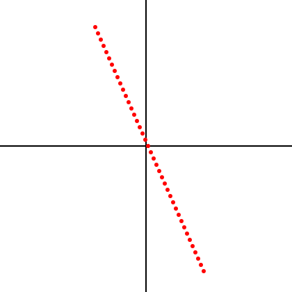
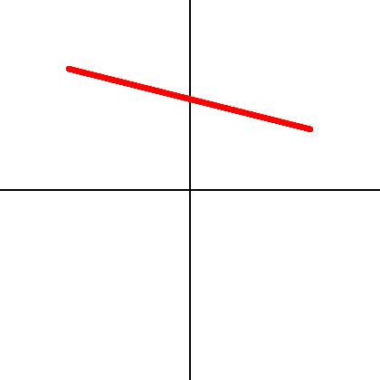

Expressing one \(GF(2)\) vector as a sum of others
Problem 2.14.4
Here are six 7-vectors over \(GF(2)\):
a = 1100000
d = 0001100
b = 0110000
e = 0000110
c = 0011000
f = 0000011
For each of the following vectors \(u\), find a subset of the above vectors whose sum is \(u\), or report that no such subset exists.
\(u\) = 0010010
\(u\) = 0100010
\(u\) = \(c\) + \(d\) + \(e\)
\(u\) = \(b\) + \(c\) + \(d\) + \(e\)
Problem 2.14.5
Here are six 7-vectors over \(GF(2)\):
a = 1110000
d = 0001110
b = 0111000
e = 0000111
c = 0011100
f = 0000011
For each of the following vectors \(u\), find a subset of the above vectors whose sum is \(u\), or report that no such subset exists.
\(u\) = 0010010
\(u\) = 0100010
\(u\) = \(c\) + \(d\)
There is no such subset.
Finding a solution to linear equations over \(GF(2)\)
Problem 2.14.6
Find a vector \(x = [x_1, x_2, x_3, x_4]\) over \(GF(2)\) satisfying the following linear equations: \(1100 \cdot x = 1\) \(1010 \cdot x = 1\)\(1111 \cdot x = 1\)
Show that \(x + 1111\) also satisfies the equations.
Consider the equations \(2x_0 + 3x_1 - 4x_2 + x_3 = 10\) \(x_0 - 5x_1 + 2x_2 + 0x_3 = 35\) \(4x_0 + x_1 - x_2 - x_3 = 8\)
Your job is not to solve these equations but to formulate them using dot-product. In particular, come up with three vectors v1, v2, and v3 represented as lists so that the above equations are equivalent to \(\mathrm{v1} \cdot x = 10\) \(\mathrm{v2} \cdot x = 35\) \(\mathrm{v3} \cdot x = 8\)
where \(x\) is a 4-vector over \(\mathbb{R}\). \(v_1=[2, 3, -4, 1]\) \(v_2=[1, -5, 2, 0]\) \(v_3=[4, 1, -1, -1]\)
Plotting lines and segments
Problem 2.14.8
Use the plot module to plot
(a) a substantial portion of the line through [-1.5, 2] and [3, 0], and
(b) the line segment between [2, 1] and [-2, 2].
For each, provide the Python statements you used and the plot obtained.
Code
from plotting import*from IPython.display import SVG, displayL=[(3+ i*(-4), i*9) for i inrange(-20, 20)]display(SVG(plot(L, 200)))

Code
import numpy as npfrom plotting import*from IPython.display import SVG, displayL=[(2-i, 1+0.25*i) for i in np.arange(0, 4, 0.001)]display(SVG(plot(L, 3)))

Practice with dot-product
Problem 2.14.9
For each of the following pairs of vectors \(u\) and \(v\) over \(\mathbb{R}\), evaluate the expression \(u \cdot v\):
(a) \(u = [1, 0], v = [5, 4321]\)
(b) \(u = [0, 1], v = [12345, 6]\)
(c) \(u = [-1, 3], v = [5, 7]\)
(d) \(u = \left[-\frac{\sqrt{2}}{2}, \frac{\sqrt{2}}{2}\right], v = \left[\frac{\sqrt{2}}{2}, -\frac{\sqrt{2}}{2}\right]\)
Download the file vec.py to your computer, and edit it. The file defines procedures using the Python statement pass, which does nothing. You can import the vec module and create instances of Vec but the operations such as * and + currently do nothing. Your job is to replace each occurrence of the pass statement with appropriate code. Your code for a procedure can include calls to others of the seven. You should make no changes to the class definition.
Docstrings
At the beginning of each procedure body is a multi-line string (deliminated by triple quotation marks). This is called a documentation string (docstring). It specifies what the procedure should do.
Doctests
The documentation string we provide for a procedure also includes examples of the functionality that procedure is supposed to provide to Vecs. The examples show an interaction with Python: statements and expressions are evaluated by Python, and Python’s responses are shown. These examples are provided to you as tests (called doctests). You should make sure that your procedure is written in such a way that the behavior of your Vec implementation matches that in the examples. If not, your implementation is incorrect.
Download the file vec.py to your computer, and edit it. Fill in the procedure definitions and test the doctests with python3 -m doctest vec.py.
def getitem(v,k):""" Return the value of entry k in v. Be sure getitem(v,k) returns 0 if k is not represented in v.f. >>> v = Vec({'a','b','c', 'd'},{'a':2,'c':1,'d':3}) >>> v['d'] 3 >>> v['b'] 0 """assert k in v.Dreturn v.f[k] if k in v.f else0def setitem(v,k,val):""" Set the element of v with label d to be val. setitem(v,d,val) should set the value for key d even if d is not previously represented in v.f, and even if val is 0. >>> v = Vec({'a', 'b', 'c'}, {'b':0}) >>> v['b'] = 5 >>> v['b'] 5 >>> v['a'] = 1 >>> v['a'] 1 >>> v['a'] = 0 >>> v['a'] 0 """assert k in v.D v.f[k] = valreturndef equal(u,v):""" Return true iff u is equal to v. Because of sparse representation, it is not enough to compare dictionaries Consider using brackets notation u[...] and v[...] in your procedure to access entries of the input vectors. This avoids some sparsity bugs. >>> Vec({'a', 'b', 'c'}, {'a':0}) == Vec({'a', 'b', 'c'}, {'b':0}) True >>> Vec({'a', 'b', 'c'}, {'a': 0}) == Vec({'a', 'b', 'c'}, {}) True >>> Vec({'a', 'b', 'c'}, {}) == Vec({'a', 'b', 'c'}, {'a': 0}) True Be sure that equal(u, v) checks equalities for all keys from u.f and v.f even if some keys in u.f do not exist in v.f (or vice versa) >>> Vec({'x','y','z'},{'y':1,'x':2}) == Vec({'x','y','z'},{'y':1,'z':0}) False >>> Vec({'a','b','c'}, {'a':0,'c':1}) == Vec({'a','b','c'}, {'a':0,'c':1,'b':4}) False >>> Vec({'a','b','c'}, {'a':0,'c':1,'b':4}) == Vec({'a','b','c'}, {'a':0,'c':1}) False The keys matter: >>> Vec({'a','b'},{'a':1}) == Vec({'a','b'},{'b':1}) False The values matter: >>> Vec({'a','b'},{'a':1}) == Vec({'a','b'},{'a':2}) False """assert u.D == v.D first = [] second = []for k in u.D:if k in u.f: first.append(u.f[k])else: first.append(0)if k in v.f: second.append(v.f[k])else: second.append(0)return first == seconddef add(u,v):""" Returns the sum of the two vectors. Consider using brackets notation u[...] and v[...] in your procedure to access entries of the input vectors. This avoids some sparsity bugs. Do not seek to create more sparsity than exists in the two input vectors. Doing so will unnecessarily complicate your code and will hurt performance. Make sure to add together values for all keys from u.f and v.f even if some keys in u.f do not exist in v.f (or vice versa) >>> a = Vec({'a','e','i','o','u'}, {'a':0,'e':1,'i':2}) >>> b = Vec({'a','e','i','o','u'}, {'o':4,'u':7}) >>> c = Vec({'a','e','i','o','u'}, {'a':0,'e':1,'i':2,'o':4,'u':7}) >>> a + b == c True >>> a == Vec({'a','e','i','o','u'}, {'a':0,'e':1,'i':2}) True >>> b == Vec({'a','e','i','o','u'}, {'o':4,'u':7}) True >>> d = Vec({'x','y','z'}, {'x':2,'y':1}) >>> e = Vec({'x','y','z'}, {'z':4,'y':-1}) >>> f = Vec({'x','y','z'}, {'x':2,'y':0,'z':4}) >>> d + e == f True >>> d == Vec({'x','y','z'}, {'x':2,'y':1}) True >>> e == Vec({'x','y','z'}, {'z':4,'y':-1}) True >>> b + Vec({'a','e','i','o','u'}, {}) == b True """assert u.D == v.Dreturn Vec(u.D, {d:getitem(u,d)+getitem(v,d) for d in u.D})def dot(u,v):""" Returns the dot product of the two vectors. Consider using brackets notation u[...] and v[...] in your procedure to access entries of the input vectors. This avoids some sparsity bugs. >>> u1 = Vec({'a','b'}, {'a':1, 'b':2}) >>> u2 = Vec({'a','b'}, {'b':2, 'a':1}) >>> u1*u2 5 >>> u1 == Vec({'a','b'}, {'a':1, 'b':2}) True >>> u2 == Vec({'a','b'}, {'b':2, 'a':1}) True >>> v1 = Vec({'p','q','r','s'}, {'p':2,'s':3,'q':-1,'r':0}) >>> v2 = Vec({'p','q','r','s'}, {'p':-2,'r':5}) >>> v1*v2 -4 >>> w1 = Vec({'a','b','c'}, {'a':2,'b':3,'c':4}) >>> w2 = Vec({'a','b','c'}, {'a':12,'b':8,'c':6}) >>> w1*w2 72 The pairwise products should not be collected in a set before summing because a set eliminates duplicates >>> v1 = Vec({1, 2}, {1 : 3, 2 : 6}) >>> v2 = Vec({1, 2}, {1 : 2, 2 : 1}) >>> v1 * v2 12 """assert u.D == v.Dsum=0for k in u.D:if k in u.f and k in v.f:sum+= u.f[k]*v.f[k]returnsumdef scalar_mul(v, alpha):""" Returns the scalar-vector product alpha times v. Consider using brackets notation v[...] in your procedure to access entries of the input vector. This avoids some sparsity bugs. >>> zero = Vec({'x','y','z','w'}, {}) >>> u = Vec({'x','y','z','w'},{'x':1,'y':2,'z':3,'w':4}) >>> 0*u == zero True >>> 1*u == u True >>> 0.5*u == Vec({'x','y','z','w'},{'x':0.5,'y':1,'z':1.5,'w':2}) True >>> u == Vec({'x','y','z','w'},{'x':1,'y':2,'z':3,'w':4}) True """return Vec(v.D, {d:alpha*getitem(v, d) for d in v.D})def neg(v):""" Returns the negation of a vector. Consider using brackets notation v[...] in your procedure to access entries of the input vector. This avoids some sparsity bugs. >>> u = Vec({1,3,5,7},{1:1,3:2,5:3,7:4}) >>> -u Vec({1, 3, 5, 7},{1: -1, 3: -2, 5: -3, 7: -4}) >>> u == Vec({1,3,5,7},{1:1,3:2,5:3,7:4}) True >>> -Vec({'a','b','c'}, {'a':1}) == Vec({'a','b','c'}, {'a':-1}) True """return scalar_mul(v, -1)###############################################################################################################################class Vec:""" A vector has two fields: D - the domain (a set) f - a dictionary mapping (some) domain elements to field elements elements of D not appearing in f are implicitly mapped to zero """def__init__(self, labels, function):assertisinstance(labels, set)assertisinstance(function, dict)self.D = labelsself.f = function__getitem__= getitem__setitem__= setitem__neg__= neg__rmul__= scalar_mul #if left arg of * is primitive, assume it's a scalardef__mul__(self,other):#If other is a vector, returns the dot product of self and otherifisinstance(other, Vec):return dot(self,other)else:returnNotImplemented# Will cause other.__rmul__(self) to be invokeddef__truediv__(self,other): # Scalar divisionreturn (1/other)*self__add__= adddef__radd__(self, other):"Hack to allow sum(...) to work with vectors"if other ==0:returnselfdef__sub__(a,b):"Returns a vector which is the difference of a and b."return a+(-b)__eq__= equaldef is_almost_zero(self): s =0for x inself.f.values():ifisinstance(x, int) orisinstance(x, float): s += x*xelifisinstance(x, complex): y =abs(x) s += y*yelse: returnFalsereturn s <1e-20def__str__(v):"pretty-printing" D_list =sorted(v.D, key=repr) numdec =3 wd =dict([(k,(1+max(len(str(k)), len('{0:.{1}G}'.format(v[k], numdec))))) ifisinstance(v[k], int) orisinstance(v[k], float) else (k,(1+max(len(str(k)), len(str(v[k]))))) for k in D_list]) s1 =''.join(['{0:>{1}}'.format(str(k),wd[k]) for k in D_list]) s2 =''.join(['{0:>{1}.{2}G}'.format(v[k],wd[k],numdec) ifisinstance(v[k], int) orisinstance(v[k], float) else'{0:>{1}}'.format(v[k], wd[k]) for k in D_list])return"\n"+ s1 +"\n"+'-'*sum(wd.values()) +"\n"+ s2def__hash__(self):"Here we pretend Vecs are immutable so we can form sets of them" h =hash(frozenset(self.D))for k,v insorted(self.f.items(), key =lambda x:repr(x[0])):if v !=0: h =hash((h, hash(v)))return hdef__repr__(self):return"Vec("+str(self.D) +","+str(self.f) +")"def copy(self):"Don't make a new copy of the domain D"return Vec(self.D, self.f.copy())def__iter__(self):raiseTypeError('%r object is not iterable'%self.__class__.__name__)
Note that a returncode of 0 means that all of the testcases executed successfully.
Source Code
---title: "Chapter 2 Assignment"author: Anish Goyaldate: January 30, 2023format: html: code-fold: true code-tools: true code-link: truepdf-engine: pdflatextoc: truetoc-depth: 4toc-location: bodycode-overflow: wrapcode-line-numbers: true filters: - include-code-files---{{< pagebreak >}}## **2.14 Problems** {.unnumbered .unlisted}## Vector addition practice### Problem 2.14.1For vectors $v = [-1, 3]$ and $u = [0, 4]$, find the vectors $v+u$,$v-u$, and $3v-2u$. Draw these arrows as arrows on the same graph.$v+u$ = \[-1, 7\] \$v-u$ = \[-1, -1\] \$3v-2u$ = \[-3, 1\]```{python}import matplotlib.pyplot as pltv = [-1, 3]u = [0, 4]v_plus_u = [-1, 7]v_minus_u = [-1, -1]three_v_minus_two_u = [-3, -5]plt.arrow(0, 0, v[0], v[1], color='blue', width=0.05, length_includes_head=True, label='v')plt.arrow(0, 0, u[0], u[1], color='green', width=0.05, length_includes_head=True, label='u')plt.arrow(0, 0, v_plus_u[0], v_plus_u[1], color='red', width=0.05, length_includes_head=True, label='v+u')plt.arrow(0, 0, v_minus_u[0], v_minus_u[1], color='purple', width=0.05, length_includes_head=True, label='v-u')plt.arrow(0, 0, three_v_minus_two_u[0], three_v_minus_two_u[1], color='orange', width=0.05, length_includes_head=True, label='3v-2u')plt.xlim(-4, 2)plt.ylim(-6, 8)plt.legend()plt.show()```### Problem 2.14.2Given the vectors $v = [2, -1, 5]$ and $u = [-1, 1, 1]$, find thevectors $v+u$, $v-u$, $2v-u$, and $v+2u$.$v+u = [1, 0, 6]$ \$v-u = [3, -2, 4]$ \ $2v-u = [5, -3, 9]$ \$v+2u = [0, 1, 7]$ ### Problem 2.14.3For the vectors $v=[0, one, one]$ and $u=[one, one, one]$ over $GF(2)$,find $v+u$ and $v+u+u$.$v+u = [0, one, one] + [one, one, one] = [one, 0, 0]$ \$v+u+u = [one, 0, 0] + [one, one, one] = [0, one, one]$ ## Expressing one $GF(2)$ vector as a sum of others### Problem 2.14.4Here are six 7-vectors over $GF(2)$:| | ||-----------------|-----------------|| **a** = 1100000 | **d** = 0001100 || **b** = 0110000 | **e** = 0000110 || **c** = 0011000 | **f** = 0000011 |For each of the following vectors $u$, find a subset of the abovevectors whose sum is $u$, or report that no such subset exists.1. $u$ = 0010010 \2. $u$ = 0100010 \1) $u$ = $c$ + $d$ + $e$ \2) $u$ = $b$ + $c$ + $d$ + $e$### Problem 2.14.5Here are six 7-vectors over $GF(2)$:| | ||-----------------|-----------------|| **a** = 1110000 | **d** = 0001110 || **b** = 0111000 | **e** = 0000111 || **c** = 0011100 | **f** = 0000011 |For each of the following vectors $u$, find a subset of the abovevectors whose sum is $u$, or report that no such subset exists.1. $u$ = 0010010 \2. $u$ = 0100010 \ 1) $u$ = $c$ + $d$ \2) There is no such subset.## Finding a solution to linear equations over $GF(2)$### Problem 2.14.6Find a vector $x = [x_1, x_2, x_3, x_4]$ over $GF(2)$ satisfying the following linear equations: \$1100 \cdot x = 1$ \$1010 \cdot x = 1$ \ $1111 \cdot x = 1$ \Show that $x + 1111$ also satisfies the equations. \A vector that satisfies the linear equation is $x = [1, 0, 0, 0]$.$1100 \cdot 1000 \stackrel{\checkmark}{=} 1$ \$1010 \cdot 1000 \stackrel{\checkmark}{=} 1$ \$1111 \cdot 1000 \stackrel{\checkmark}{=} 1$ \$(x=1000)+1111 = 0111$ also satisfies the equations: \$1100 \cdot 0111 \stackrel{\checkmark}{=} 0 + 1 + 0 + 0 \stackrel{\checkmark}{=} 1$ \$1010 \cdot 0111 \stackrel{\checkmark}{=} 0 + 0 + 1 + 0 \stackrel{\checkmark}{=} 1$ \$1111 \cdot 0111 \stackrel{\checkmark}{=} 0 + 1 + 1 + 1 \stackrel{\checkmark}{=} 1$## Formulating equations using dot-product### Problem 2.14.7Consider the equations \$2x_0 + 3x_1 - 4x_2 + x_3 = 10$ \$x_0 - 5x_1 + 2x_2 + 0x_3 = 35$ \$4x_0 + x_1 - x_2 - x_3 = 8$ \Your job is not to solve these equations but to formulate them using dot-product. In particular, come up with three vectors v1, v2, and v3 represented as lists so that the above equations are equivalent to \$\mathrm{v1} \cdot x = 10$ \$\mathrm{v2} \cdot x = 35$ \$\mathrm{v3} \cdot x = 8$ \where $x$ is a 4-vector over $\mathbb{R}$. \$v_1=[2, 3, -4, 1]$ \$v_2=[1, -5, 2, 0]$ \$v_3=[4, 1, -1, -1]$## Plotting lines and segments### Problem 2.14.8Use the `plot` module to plot \(a) a substantial portion of the line through [-1.5, 2] and [3, 0], and \(b) the line segment between [2, 1] and [-2, 2]. \For each, provide the Python statements you used and the plot obtained.```{python}from plotting import*from IPython.display import SVG, displayL=[(3+ i*(-4), i*9) for i inrange(-20, 20)]display(SVG(plot(L, 200)))``````{python}import numpy as npfrom plotting import*from IPython.display import SVG, displayL=[(2-i, 1+0.25*i) for i in np.arange(0, 4, 0.001)]display(SVG(plot(L, 3)))```## Practice with dot-product### Problem 2.14.9For each of the following pairs of vectors $u$ and $v$ over $\mathbb{R}$, evaluate the expression $u \cdot v$: \(a) $u = [1, 0], v = [5, 4321]$ \(b) $u = [0, 1], v = [12345, 6]$ \(c) $u = [-1, 3], v = [5, 7]$ \(d) $u = \left[-\frac{\sqrt{2}}{2}, \frac{\sqrt{2}}{2}\right], v = \left[\frac{\sqrt{2}}{2}, -\frac{\sqrt{2}}{2}\right]$(a) $[1, 0] \cdot [5, 4321] = 5 + 0 = 5$ \(b) $[0, 1] \cdot [12345, 6] = 0 + 6 = 6$ \(c) $[-1, 3] \cdot [5, 7] = -5 + 21 =16$ \(d) $\left[-\frac{\sqrt{2}}{2}, \frac{\sqrt{2}}{2}\right] \cdot \left[\frac{\sqrt{2}}{2}, -\frac{\sqrt{2}}{2}\right] = -\frac{1}{2} - \frac{1}{2} = -1$## Writing procedures for the `Vec` class### Problem 2.14.10Download the file `vec.py` to your computer, and edit it. The file defines procedures using the Python statement `pass`, which does nothing. You can import the `vec` module and create instances of `Vec` but the operations such as * and + currently do nothing. Your job is to replace each occurrence of the `pass` statement with appropriate code. Your code for a procedure can include calls to others of the seven. You should make no changes to the class definition.#### DocstringsAt the beginning of each procedure body is a multi-line string (deliminated by triple quotation marks). This is called a documentation string (*docstring*). It specifies what the procedure should do.#### DoctestsThe documentation string we provide for a procedure also includes examples of the functionality that procedure is supposed to provide to `Vec`s. The examples show an interaction with Python: statements and expressions are evaluated by Python, and Python's responses are shown. These examples are provided to you as tests (called *doctests*). You should make sure that your procedure is written in such a way that the behavior of your Vec implementation matches that in the examples. If not, your implementation is incorrect. Download the file `vec.py` to your computer, and edit it. Fill in the procedure definitions and test the doctests with `python3 -m doctest vec.py`.```{.python include="vec.py"}```#### Testing `vec.py````{python}import subprocesssubprocess.run(["python", "-m", "doctest", "vec.py"], check=True)```Note that a `returncode` of 0 means that all of the testcases executed successfully.